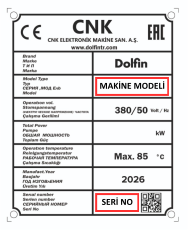

Cihazınızın arkasında veya yan tarafında bulunan ürün etiketinde seri numarası ve makine modeli bilgilerini bulabilirsiniz. Aşağıdaki görselde etiket örneği gösterilmiştir:

| Doküman Kodu | Doküman Adı | Tür | Versiyon | İndir |
|---|
Bu makineye tanımlı doküman bulunmuyor.